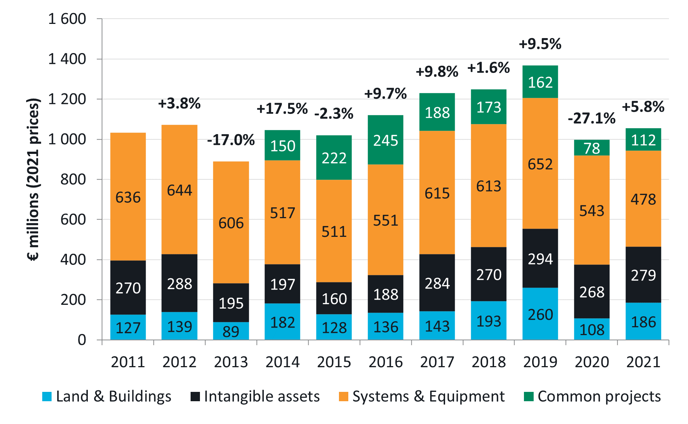
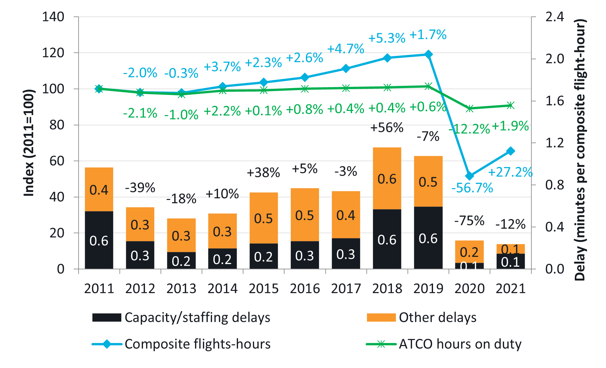
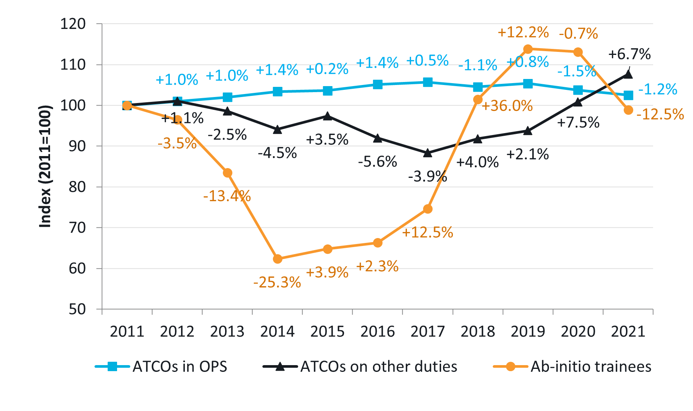

Capital expenditure in 2020-2021 compared to their historical average
This section provides a preliminary analysis of capital expenditures in 2020 and 2021 compared with their historical levels and looks at contextual elements such as traffic, ATFM delays and staffing. Although the relationship between these elements is not straightforward, with many factors affecting the quality of service provided by ANSPs, it is important to consider the situation in which ANSPs were operating at the time of making investment decisions.
Figure 1 shows that, on average, capex across the 2011-2019 period was €1.1 billion per year, with less spent in the first part of the period (€1.0 billion 2011-2014) and more in the second part (€1.2 billion 2015-2019). After a -27.1% drop in 2020 compared to 2019, capex rose by +5.8% in 2021, but, overall, remained -5.3% below the 2011-2019 average.

Several factors could explain this overall reduction, including local sanitary measures, liquidity issues, availability of internal resources, availability of suppliers, etc. However, the situation at individual ANSP level is contrasted, and some ANSPs invested significantly more in 2020 and 2021 than in the preceding decade. More details will be provided in the forthcoming ACE report.
Figure 2 and XX@fig-figure-6-3 below provide an overview of the context in which the capital expenditures were made. Traffic grew consistently from 2013, so that by 2019 ANSPs were handling + 19% more composite flight-hours than at the start of the period, leading to a marked deterioration in the quality of service, especially in 2018 and 2019.


In the meantime, the number of ATCO-hours on duty remained largely stable between 2011 and 2019, despite a slight increase in the number of ATCOs in OPS. The combined acceleration of capital expenditures and recruitment of ab-initio trainees over the 2016-2019 period shows that overall, some decisions were made to adapt to the rising traffic demand. However, there is a time lag which can extend to several years between the decision to invest or recruit ab-initio trainees and the actual commissioning of capex projects or staff intake. The forthcoming ACE 2021 benchmarking report will include a more detailed analysis of capex cycles at individual ANSP level.